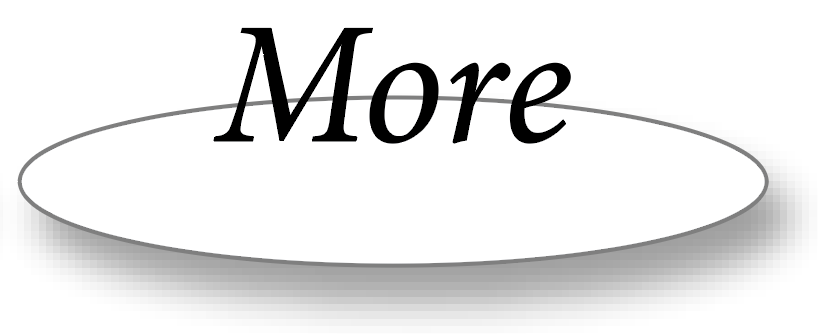
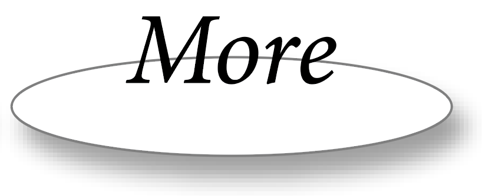

© Nathan Raccah 
Collaboration, action research, installation, performance, writing
angeli goes offshore
A collaborative project with Nathan Raccah and Ward Lauwers
2022
© Nathan Raccah 
Angeli is a design research and documentary project exploring
our relation to the technical infrastructures that make our world.
More specifically, Angeli Goes Offshore is seeking humanity’s most
singular achievements and engineering marvels in the energy sector.
This time, firmly heading to board on an oil platform and eventually seeing petroleum from their very own eyes, the three companions of the Angeli expeditions are now on their journey to the Mittelplate offshore rig, in the middle of Friedrichskoog’s natural park, Germany. Shiny German ICE trains, prefab colored bungalows, windy cold shores and windmill parks like wildflowers, setting up the decorum of this journey through the current energetic transition and the cultural shift that goes with it. Wandering along the dam, harvesting local delicacies, talking with mayors and farmers, crafting with the surrounding bushes...as many attempts to get closer to this land.


Video tour of the installation


Video running in the installation
© Edit by Ward Lauwers
You can find a continuation of this project here
—•—•—•—•—•—•∆… Page still under construction …∆—•—•—•—•—•—•
Things to come are:
• A video of a reading performance of the final installation at The Fabriek, Eindhoven